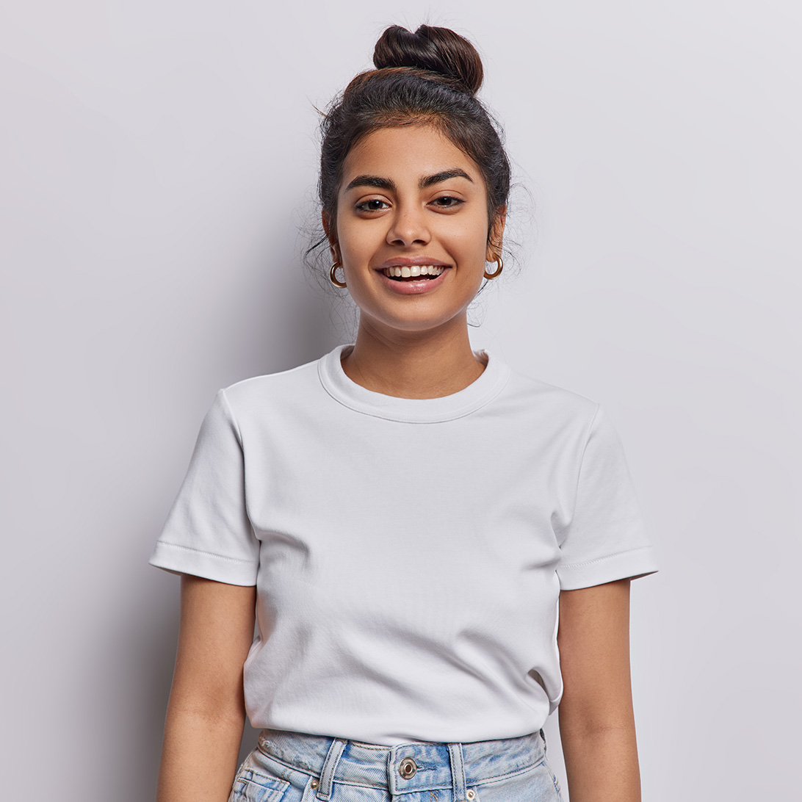

An emerging creative designer with 3 years of experience, Anuj specializes in digital media design, typography, and illustration. Currently studying at UniSC, she combines modern trends with a timeless aesthetic to create innovative and enduring designs

Leonardo is a dynamic Creative Director with a dual expertise in visual design and strategic thinking. A Central Saint Martins graduate, he transforms abstract concepts into tangible solutions, employing design thinking as a catalyst for business growth and social change.

UX/UI Designer Kiera, a School of Visual Arts graduate, combines aesthetics with user-centric design to enhance user experience. Specializing in prototyping, user research, and interaction design, Kiera's work blends functionality and beauty.